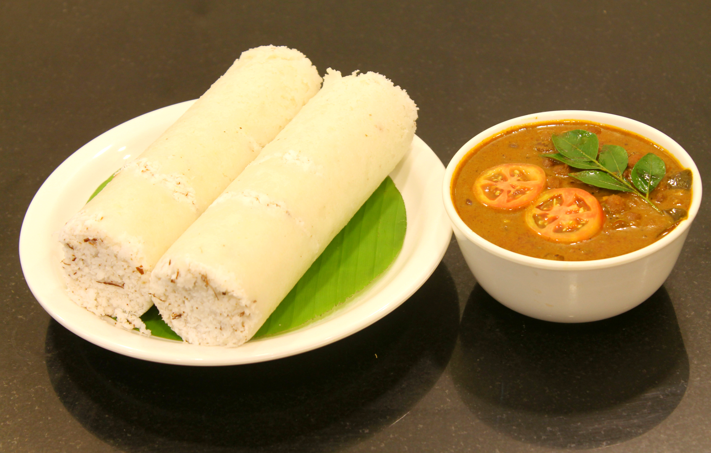

Take rice flour and mix it with a pinch of salt. Sprinkle water little by little and mix until it forms a crumbly texture (not dough). In a pittu steamer, add a layer of grated coconut followed by a layer of the rice flour mixture. Repeat the layers and finish with coconut on top. Steam for about 5–10 minutes until cooked. Carefully remove and serve hot with coconut milk, sugar, or curry.
Back